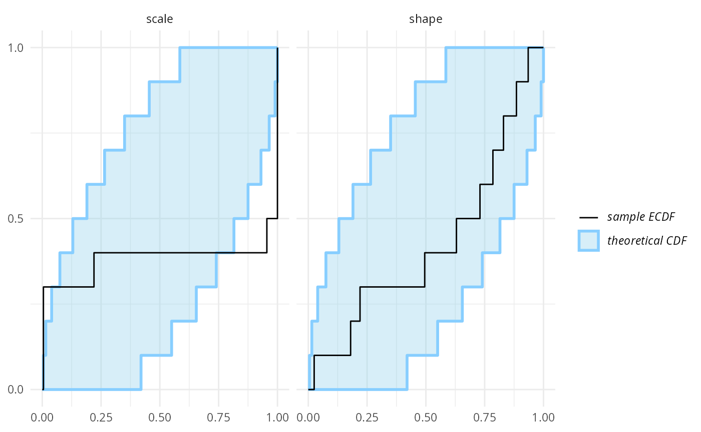
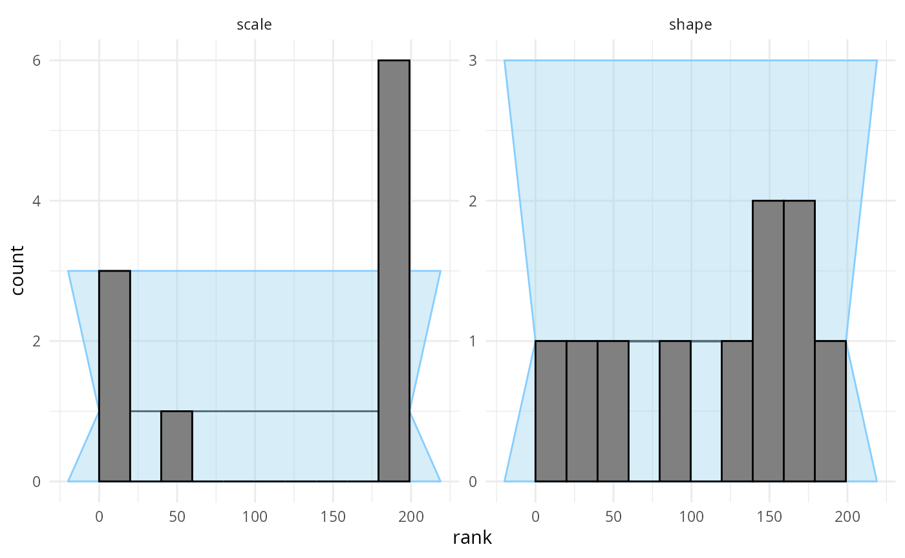
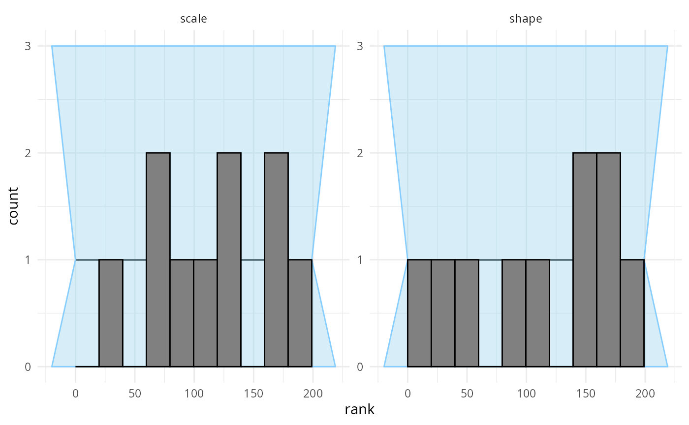

vignettes/bad_parametrization.Rmd
bad_parametrization.RmdThis vignette provides the example used as Exercise 2 of the SBC tutorial presented at SBC StanConnect. Feel free to head to the tutorial website to get an interactive version and solve the problems yourself.
Let’s setup the environment:
library(SBC)
library(ggplot2)
use_cmdstanr <- getOption("SBC.vignettes_cmdstanr", TRUE) # Set to false to use rstan instead
if(use_cmdstanr) {
library(cmdstanr)
} else {
library(rstan)
rstan_options(auto_write = TRUE)
}
options(mc.cores = parallel::detectCores())
# Uncomment below to have the fits evaluated in parallel
# However, as this example evaluates just a few fits, it
# is usually not worth the overhead.
# library(future)
# plan(multisession)
# Setup caching of results
if(use_cmdstanr) {
cache_dir <- "./_bad_parametrization_SBC_cache"
} else {
cache_dir <- "./_bad_parametrization_rstan_SBC_cache"
}
if(!dir.exists(cache_dir)) {
dir.create(cache_dir)
}
theme_set(theme_minimal())
# Run this _in the console_ to report progress for all computations to report progress for all computations
# see https://progressr.futureverse.org/ for more options
progressr::handlers(global = TRUE)Premise: we mistakenly assume that Stan does parametrize the Gamma distribution via shape and scale, when in fact Stan uses the shape and rate parametrization (see Gamma distribution on Wikipedia for details on the parametrizations.
data {
int N;
vector<lower=0>[N] y;
}
parameters {
real<lower = 0> shape;
real<lower = 0> scale;
}
model {
y ~ gamma(shape, scale);
shape ~ lognormal(0, 1);
scale ~ lognormal(0, 1.5);
}
iter_warmup <- 1000
iter_sampling <- 1000
if(use_cmdstanr) {
model_gamma <- cmdstan_model("stan/bad_parametrization1.stan")
backend_gamma <- SBC_backend_cmdstan_sample(
model_gamma, iter_warmup = iter_warmup, iter_sampling = iter_sampling, chains = 2)
} else {
model_gamma <- stan_model("stan/bad_parametrization1.stan")
backend_gamma <- SBC_backend_rstan_sample(
model_gamma, iter = iter_sampling + iter_warmup, warmup = iter_warmup, chains = 2)
}Build a generator to create simulated datasets.
set.seed(21448857)
n_sims <- 10
single_sim_gamma <- function(N) {
shape <- rlnorm(n = 1, meanlog = 0, sdlog = 1)
scale <- rlnorm(n = 1, meanlog = 0, sdlog = 1.5)
y <- rgamma(N, shape = shape, scale = scale)
list(
variables = list(
shape = shape,
scale = scale),
generated = list(
N = N,
y = y)
)
}
generator_gamma <- SBC_generator_function(single_sim_gamma, N = 40)
datasets_gamma <- generate_datasets(
generator_gamma,
n_sims)
results_gamma <- compute_SBC(datasets_gamma, backend_gamma,
cache_mode = "results",
cache_location = file.path(cache_dir, "model1"))## Results loaded from cache file 'model1'## - 10 (100%) fits had some steps rejected. Maximum number of rejections was 8.## Not all diagnostics are OK.
## You can learn more by inspecting $default_diagnostics, $backend_diagnostics
## and/or investigating $outputs/$messages/$warnings for detailed output from the backend.Here we also use the caching feature to avoid recomputing the fits when recompiling this vignette. In practice, caching is not necessary but is often useful.
10 simulations are enough to see something is wrong with the model.
The problem is best seen on an ecdf plot - we even see the
issue is primarily with the scale variable!
plot_ecdf(results_gamma)
However, we can use the rank histogram (with suitable number of bins)
to show a different visualisation of the same problem. The rank
histogram often tends to be intuitively more understandable than the
ecdf plots, but tweaking the number of bins is often
necessary and the confidence interval is only approximate and has
decreased sensitivity.
plot_rank_hist(results_gamma, bins = 10)
So we see that the simulation does not match the model. In practice,
the problem may lie with the simulation, with the model or both. Here,
we’ll assume that the simulation is correct - we really wanted to work
with scale and fix the model to match. I.e. we still represent scale in
our model, but invert it to get rate before using Stan’s
gamma distribution:
data {
int N;
vector<lower=0>[N] y;
}
parameters {
real<lower = 0> shape;
real<lower = 0> scale;
}
model {
y ~ gamma(shape, inv(scale));
shape ~ lognormal(0, 1);
scale ~ lognormal(0, 1.5);
}
if(use_cmdstanr) {
model_gamma_2 <- cmdstan_model("stan/bad_parametrization2.stan")
backend_gamma_2 <- SBC_backend_cmdstan_sample(
model_gamma_2, iter_warmup = iter_warmup, iter_sampling = iter_sampling, chains = 2)
} else {
model_gamma_2 <- stan_model("stan/bad_parametrization2.stan")
backend_gamma_2 <- SBC_backend_rstan_sample(
model_gamma_2, iter = iter_sampling + iter_warmup, warmup = iter_warmup, chains = 2)
}
results_gamma2 <- compute_SBC(datasets_gamma, backend_gamma_2,
cache_mode = "results",
cache_location = file.path(cache_dir, "model2"))## Results loaded from cache file 'model2'## - 10 (100%) fits had some steps rejected. Maximum number of rejections was 7.## Not all diagnostics are OK.
## You can learn more by inspecting $default_diagnostics, $backend_diagnostics
## and/or investigating $outputs/$messages/$warnings for detailed output from the backend.No obvious problems here, but if we wanted to be sure, we should have ran a lot more simulations.
plot_ecdf(results_gamma2)
plot_rank_hist(results_gamma2, bins = 10)